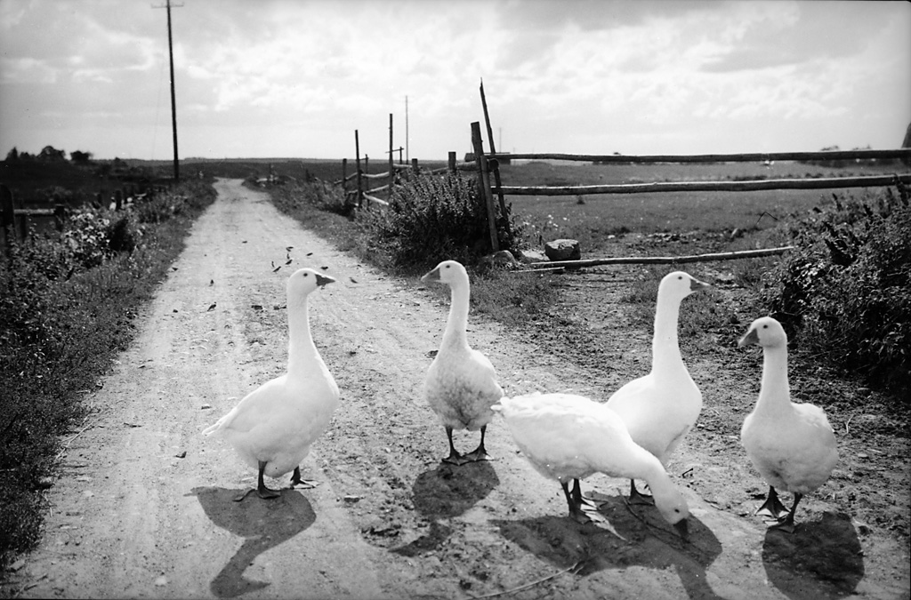
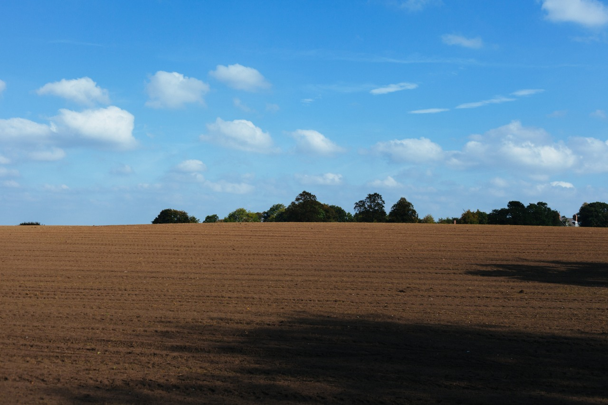
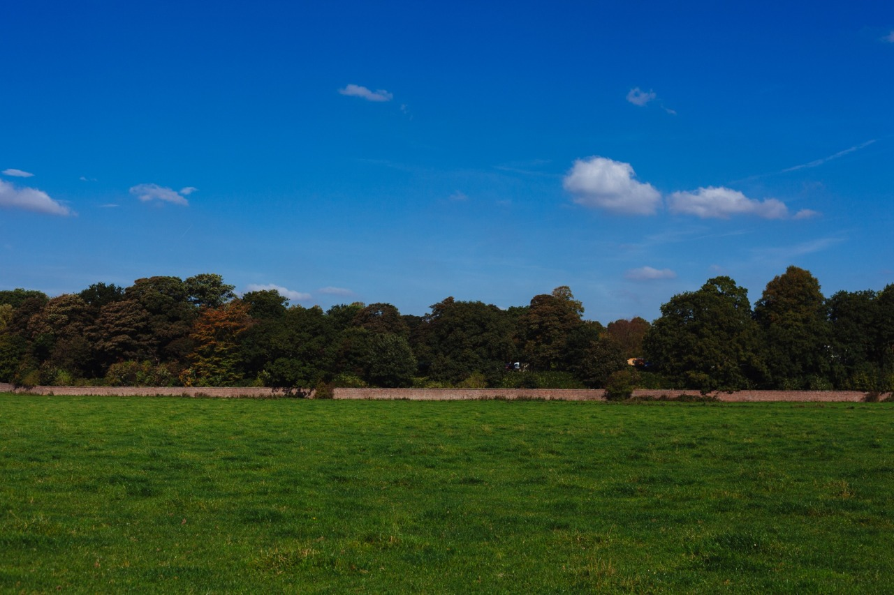

You never know who we will find visiting the farm. In the spring look for new additions to the the animal staff.Who doesn't love harvest time. The cut fields are being bailed as we speak.

The fields need love here is a look at winter prep.

Beautiful green.Even the rocks around here like to grow things.Curious, just ask, any of our employees will be happy to tell you why we do something a certain way.